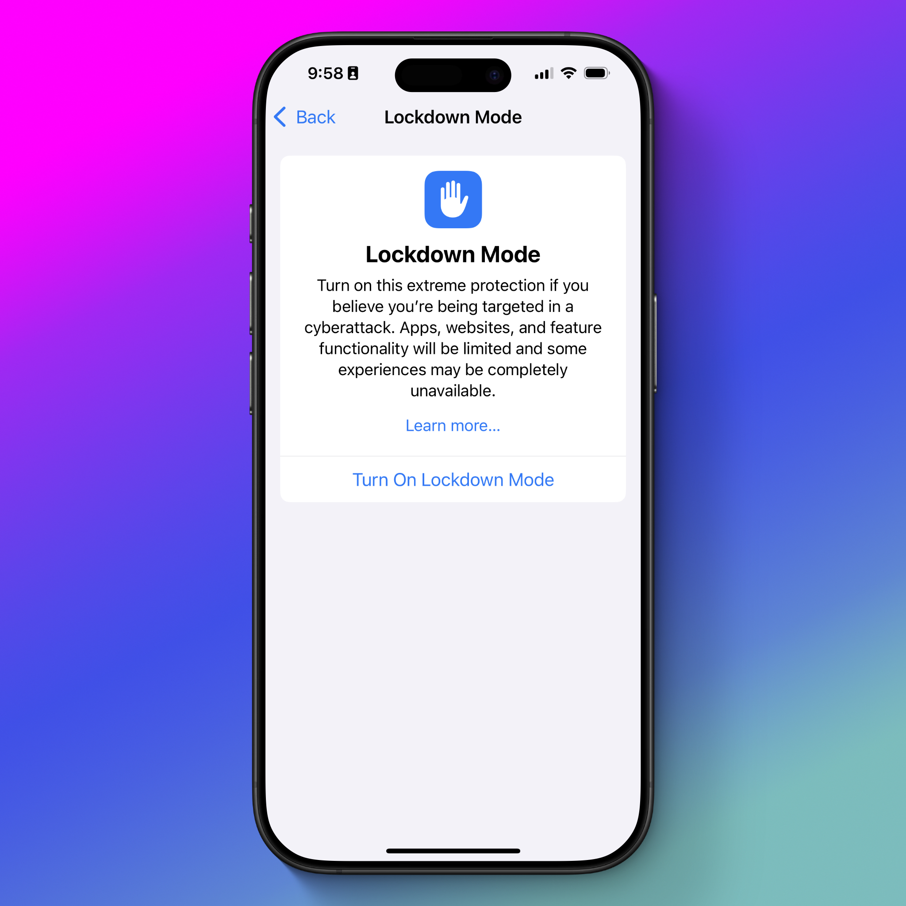
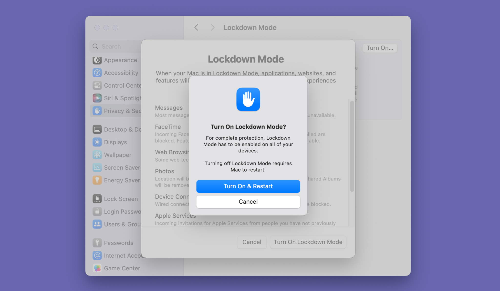
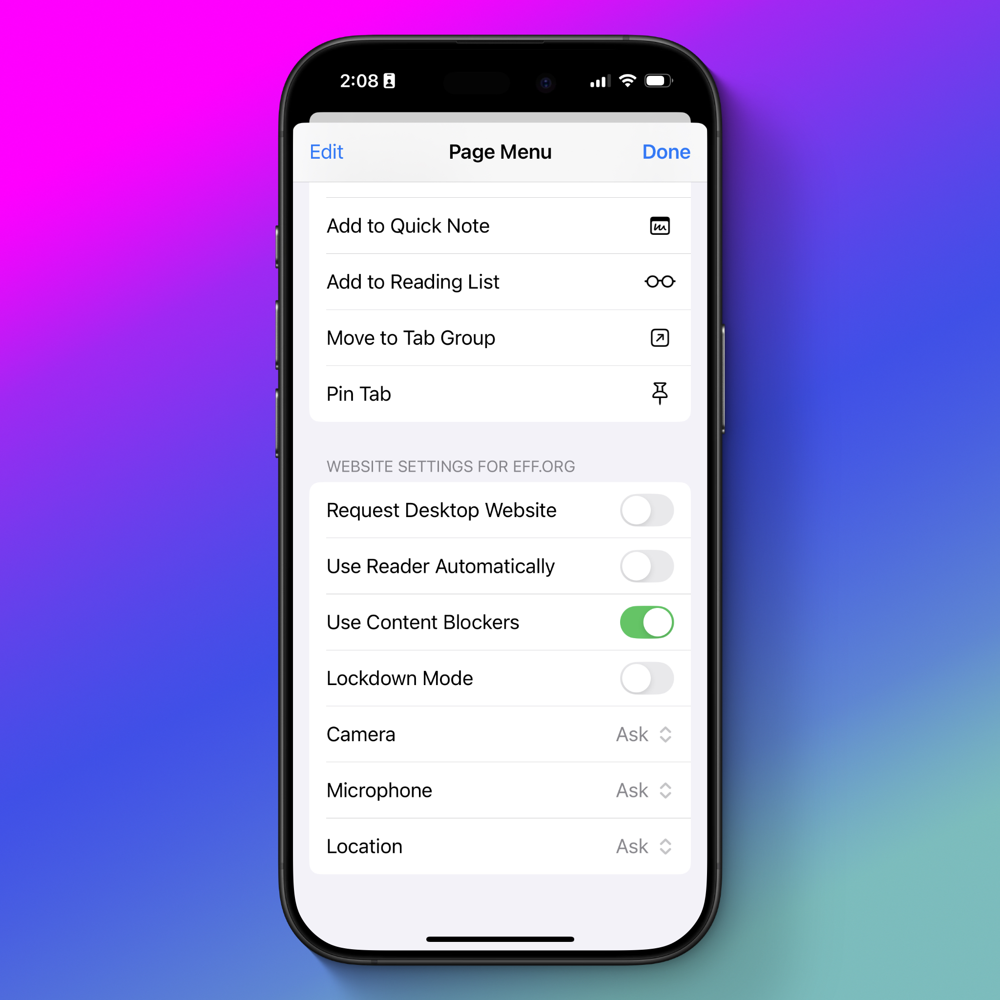

কীভাবে: আইফোনে লকডাউন মোড (Lockdown Mode) চালু করবেন #
লাইসেন্স ও অ্যাট্রিবিউশন নোট
এই লেখাটি Electronic Frontier Foundation (EFF)-এর Surveillance Self-Defense (SSD) প্রকল্পের "How to: Enable Lockdown Mode on iPhone" নিবন্ধের একটি বাংলা অনুবাদ। মূল নিবন্ধ: https://ssd.eff.org/module/how-to-enable-lockdown-mode-on-iphone
মূল লেখাটি Creative Commons Attribution 4.0 International (CC BY 4.0) লাইসেন্সের অধীনে প্রকাশিত। এই অনুবাদও একই লাইসেন্সের অধীনে প্রকাশিত।
অনুবাদ করা হয়েছে মূল ইংরেজি লেখা থেকে; এতে পরিবর্তন (ভাষান্তর) করা হয়েছে। এই অনুবাদ EFF কর্তৃক অনুমোদিত বা সমর্থিত নয়।
অনুবাদক: সামিন ইয়াসার · অনুবাদের তারিখ: ০৫ অক্টোবর, ২০২৬
লকডাউন মোড কী? #
লকডাউন মোড আইফোন, আইপ্যাড ও ম্যাকের জন্য একটি ঐচ্ছিক সেটিং, যা ঝুঁকিপূর্ণ অবস্থানে থাকা ব্যক্তিদের নির্দিষ্ট ধরনের ডিজিটাল হুমকি থেকে রক্ষা করার জন্য তৈরি। iOS 16, iPadOS 16, macOS 13 এবং এর পরবর্তী সংস্করণ চালাতে সক্ষম যেকোনো ডিভাইসে এটি পাওয়া যায়।
অ্যাপল ডিভাইসকে লক্ষ্যবস্তু করা ম্যালওয়্যার (malware) ও স্পাইওয়্যারের (spyware) নির্মাতারা সাধারণত প্ল্যাটফর্মের নির্দিষ্ট দুর্বলতার ওপর মনোযোগ দেয়, যেগুলো প্রায়ই ডেটা শেয়ারিং, যোগাযোগের টুল বা মৌলিক ফাইল ফরম্যাট পরিচালনা করে। উদাহরণস্বরূপ, সিটিজেন ল্যাব (Citizen Lab) এমন একটি এক্সপ্লয়েট শনাক্ত করেছে যা অ্যাপল ওয়ালেট পাস (Apple Wallet pass) ব্যবহার করত, এবং আরেকটি যা হোমকিটকে (HomeKit) লক্ষ্য করত। সিটিজেন ল্যাব আরও দেখেছে যে এ ধরনের অন্যান্য আক্রমণও সম্ভবত লকডাউন মোড চালু থাকলে ব্যর্থ হতো।
যেকোনো নিরাপত্তা সফটওয়্যারের মতোই, লকডাউন মোড সব সময় সব হুমকি থেকে নিখুঁত সুরক্ষা দিতে পারে না; তবে বিভিন্ন ক্ষেত্রে, বিশেষ করে সফটওয়্যার ও নিরাপত্তা আপডেটের সঙ্গে একত্রে ব্যবহার করলে, এটি ঐতিহাসিকভাবে কার্যকর প্রমাণিত হয়েছে।
স্পাইওয়্যারের মাধ্যমে নজরদারির ঝুঁকিতে থাকা সাংবাদিক, মানবাধিকার ও গণতন্ত্রের পক্ষের কর্মী এবং সরকারি কর্মচারীদের জন্য লকডাউন মোড কার্যকর প্রমাণিত হয়েছে। যুক্তরাষ্ট্রে বিক্ষোভকারীদের বিরুদ্ধে সেল সাইট সিমুলেটর (cell site simulator) ব্যবহারের নির্দিষ্ট প্রমাণ খুবই কম থাকা সত্ত্বেও, আমরা মনে করি নিজেকে রক্ষা করার জন্য প্রয়োজনীয় পদক্ষেপগুলো এতটাই সহজ যে বেশিরভাগ বিক্ষোভকারীর জন্য এটি একটি যুক্তিসংগত প্রতিরক্ষামূলক ব্যবস্থা।
কেউ যদি আপনার ফোনে শারীরিকভাবে প্রবেশাধিকার পায়, তাহলে লকডাউন মোড আপনাকে রক্ষা করে না। তাই আপনার ডিভাইসগুলোতে অবশ্যই শক্তিশালী পাসওয়ার্ড ও পাসকোড ব্যবহার করুন।
লকডাউন মোড চালু থাকলে নির্দিষ্ট ধরনের স্পাইওয়্যার বা ক্ষতিকর প্রোগ্রামের প্রায়শই লক্ষ্যবস্তু হওয়া বেশ কিছু ফিচার আপনার ডিভাইসে বন্ধ হয়ে যায়। উদাহরণস্বরূপ, মেসেজ (Messages) অ্যাপে অনেক ধরনের অ্যাটাচমেন্ট ব্লক করা হয়, আপনার শেয়ার করা ছবি থেকে লোকেশনের তথ্য মুছে ফেলা হয়, এবং আপনার কন্টাক্টে নেই এমন কারও আসা ফেসটাইম (FaceTime) কল ব্লক করা হয়।
কারও কারও জন্য লকডাউন মোড চালু করলে আইফোন বা আইপ্যাড ব্যবহারের অনুভূতিই উল্লেখযোগ্যভাবে বদলে যাবে, এবং আপনি নিয়মিত ব্যবহার করেন এমন কিছু ফিচার বন্ধ হয়ে যেতে পারে। এমন অনেক ছোট ছোট পরিবর্তন রয়েছে যা আপনি প্রথমে হয়তো খেয়ালই করবেন না, যেমন লকডাউন মোড এসএমএসে আসা টু-ফ্যাক্টর অথেনটিকেশন কোডের অটোফিল বন্ধ করে দেয়; আবার কিছু পরিবর্তন আপনি তৎক্ষণাৎ টের পাবেন, যেমন মেসেজে লিংক প্রিভিউ না পাওয়া। আমাদের "Cover Your Tracks" টুল ব্যবহার করে আমরা এটাও জেনেছি যে কোনো ওয়েবসাইট বুঝতে পারে আপনি লকডাউন মোড ব্যবহার করছেন, যা ফিঙ্গারপ্রিন্টিং (fingerprinting)-এর একটি অতিরিক্ত মানদণ্ড হিসেবে কাজ করতে পারে। এসব ছাড়ের কিছু অন্যগুলোর চেয়ে মেনে নেওয়া কঠিন হবে; আর এটি আপনার জন্য সার্থক কি না, তা নির্ভর করে আপনার নিরাপত্তা পরিকল্পনা, আপনি কীভাবে ডিভাইসটি ব্যবহার করেন এবং কোন ফিচারগুলোর ওপর নির্ভর করেন তার ওপর।
পিক্সেল (Pixel) ফোনেও "Lockdown" নামে একটি ফিচার আছে, কিন্তু এটি অ্যাপল ডিভাইসের মতো একই পরিবর্তন আনে না। এর পরিবর্তে, এটি বায়োমেট্রিক পদ্ধতিতে ডিভাইস আনলক করা বন্ধ করে দেয় এবং ডিভাইস আনলক করতে পিন বা পাসওয়ার্ড প্রয়োজন হয়।
লকডাউন মোড চালু করার পর আপনি যেসব পরিবর্তনের মুখোমুখি হতে পারেন, তার কয়েকটি এখানে দেওয়া হলো:
অ্যাপ ও ওয়েব ব্রাউজিংয়ের পরিবর্তন #
- ওয়েব ব্রাউজিং: জাস্ট-ইন-টাইম (just-in-time) জাভাস্ক্রিপ্ট ও ওয়েবঅ্যাসেম্বলির (WebAssembly) মতো কিছু ওয়েব প্রযুক্তি বন্ধ থাকে, যার ফলে সমস্যা হতে পারে এবং কিছু ওয়েবসাইট অদ্ভুত দেখাতে পারে। ওয়েব ফন্টও বন্ধ থাকে, ফলে অনেক ওয়েবসাইট ও অ্যাপের চেহারা বদলে যায়, এবং কিছু সাইটের ছবি সম্পূর্ণভাবে ব্লক হয়ে যেতে পারে।
- মেসেজ (Messages): ছবি, ভিডিও ও অডিও ছাড়া বেশিরভাগ ধরনের মেসেজ অ্যাটাচমেন্ট ব্লক করা হয়। এর ফলে মেসেজ অ্যাপের কিছু গুরুত্বপূর্ণ অংশ, যেমন লোকেশন শেয়ারিং ও অ্যানিমেটেড জিআইএফ (GIF) শেয়ার করা, অকেজো হয়ে যেতে পারে, এবং অ্যাপল ক্যাশ (Apple Cash) দিয়ে টাকা পাঠানোর সময় আপনি তাৎক্ষণিকভাবে কী কী তথ্য দেখতে পান তাতেও পরিবর্তন আসে। লিংক প্রিভিউ বন্ধ থাকে, এবং কেউ আপনাকে লিংক পাঠালে সেটি ক্লিকযোগ্য থাকে না; এটি শুধু টেক্সট হিসেবে আসে, যা আপনাকে কপি করে ব্রাউজারে পেস্ট করতে হয়।
- ফেসটাইম (FaceTime): আগত ফেসটাইম কল ব্লক করা হয়, যদি না ব্যক্তিটি আপনার কন্টাক্টে থাকেন অথবা আপনি আগে তাঁর সঙ্গে কথা বলে থাকেন। লাইভ ফটোজ (Live Photos)-এর মতো বেশিরভাগ অতিরিক্ত ফিচার বন্ধ থাকে।
- ছবি (Photos): ছবি শেয়ার করার সময় লোকেশনের তথ্য স্বয়ংক্রিয়ভাবে বাদ দেওয়া হয়। শেয়ারড অ্যালবাম (Shared Albums) আর কাজ করে না এবং নতুন আমন্ত্রণ ব্লক করা হয়।
- কিছু অ্যাপল সেবা বন্ধ থাকে: গেম সেন্টার (Game Center) এবং হোম (Home) অ্যাপে কোনো বাড়ি পরিচালনার আমন্ত্রণ বন্ধ থাকে।
ব্যাকগ্রাউন্ডের পরিবর্তন #
- কনফিগারেশন প্রোফাইল ইনস্টল করা যায় না: লকডাউন মোডে থাকাকালীন কনফিগারেশন প্রোফাইল (configuration profile) ইনস্টল করা যায় না, এবং আপনার ডিভাইসকে কোনো নতুন ডিভাইস সুপারভিশন প্রোগ্রামে (যেমন নিয়োগকর্তা বা স্কুল কর্তৃক কখনো কখনো আবশ্যক করা প্রোগ্রাম) নথিভুক্তও করা যায় না। তবে আপনি যদি আগেই কোনো কনফিগারেশন প্রোফাইল ইনস্টল করে থাকেন, তাহলে সেটি ইনস্টল করাই থাকবে।
- ওয়্যারলেস ও সেলুলার সংযোগের পরিবর্তন: 2G সেলুলার সাপোর্ট বন্ধ থাকে। এছাড়া আপনার ডিভাইস কোনো অনিরাপদ ওয়াই-ফাই নেটওয়ার্কে স্বয়ংক্রিয়ভাবে যুক্ত হবে না, যেমন কফি শপ বা বিমানবন্দরে পাওয়া পাসওয়ার্ডবিহীন নেটওয়ার্ক।
কীভাবে লকডাউন মোড চালু করবেন #
লকডাউন মোড চালু করা কোনো স্থায়ী সিদ্ধান্ত নয়। প্রতিবার সেটিং পরিবর্তনের সময় ডিভাইস রিস্টার্ট করতে হয় বলে এটি চালু ও বন্ধ করতে কিছুটা সময় লাগে, তবে আপনি যতবার খুশি তা করতে পারেন। অর্থাৎ, নির্দিষ্ট কোনো পরিস্থিতিতে আপনি লকডাউন মোড চালু রাখতে পারেন এবং নিরাপদে বাড়ি ফিরে এলে তা বন্ধ করে দিতে পারেন।
আইফোন বা আইপ্যাডে লকডাউন মোড চালু করুন #
- Settings (সেটিংস) অ্যাপ খুলুন, তারপর Privacy & Security (প্রাইভেসি ও নিরাপত্তা) > Lockdown Mode-এ যান এবং Turn on Lockdown Mode-এ ট্যাপ করুন।
- Turn on & Restart-এ ট্যাপ করুন, আপনার পাসকোড দিন এবং ডিভাইস রিস্টার্ট হওয়া পর্যন্ত অপেক্ষা করুন।
লকডাউন মোড বন্ধ করতে একই নির্দেশনা অনুসরণ করুন, তবে এবার Turn Off Lockdown Mode বেছে নিন।

আপনার যদি এমন কোনো অ্যাপল ওয়াচ থাকে যা লকডাউন মোড চালু থাকা আইফোনের সঙ্গে যুক্ত (paired), তাহলে অ্যাপল ওয়াচেও স্বয়ংক্রিয়ভাবে লকডাউন মোড চালু হয়ে যাবে।
ম্যাকে লকডাউন মোড চালু করুন #
- System Settings (সিস্টেম সেটিংস) খুলুন, তারপর সাইডবার থেকে Privacy & Security নির্বাচন করুন।
- Lockdown Mode-এ ক্লিক করুন, তারপর Turn On-এ ক্লিক করুন।
- Turn On Lockdown Mode-এ ক্লিক করুন এবং আপনার পাসওয়ার্ড দিন।
- Turn On & Restart-এ ক্লিক করুন এবং কম্পিউটার রিবুট হওয়া পর্যন্ত অপেক্ষা করুন।
লকডাউন মোড বন্ধ করতে একই নির্দেশনা অনুসরণ করুন, তবে এবার Turn Off Lockdown Mode বেছে নিন।

কীভাবে নির্দিষ্ট অ্যাপ বা সাইটকে স্বাভাবিকভাবে কাজ করতে দেবেন #
আগেই বলা হয়েছে, লকডাউন মোড কিছু ওয়েবসাইট বা অ্যাপকে অকেজো করে দিতে পারে। কিছু ক্ষেত্রে এটি সহনীয়, যেমন কোনো ওয়েবসাইটের ফন্ট হঠাৎ অদ্ভুত দেখালে। কিন্তু অন্য ক্ষেত্রে, যেমন কোনো ওয়েবসাইটে ছবি একেবারেই না দেখালে, সাইটটি ব্যবহারের অযোগ্য হয়ে যেতে পারে। এই সমস্যা সমাধানের জন্য আপনি নির্দিষ্ট ওয়েবসাইট ও অ্যাপকে লকডাউন মোড থেকে অব্যাহতি (exempt) দিতে পারেন। এটি করলে অ্যাপ বা সাইটটি স্বাভাবিকভাবেই কাজ করবে, আর সেই অ্যাপ বা সাইট ব্যবহারে যে ঝুঁকি থাকতে পারে, তাও থেকে যাবে।
কোনো সাইট বা অ্যাপকে অব্যাহতি দেওয়ার আগে নিরাপত্তার ক্ষেত্রে এর বিনিময়মূল্য ভেবে দেখুন: এই অ্যাপটি ব্যবহার করা কি আপনার সার্বিক নিরাপত্তা দুর্বল করার মতো যথেষ্ট গুরুত্বপূর্ণ?
আইফোন ও আইপ্যাডে #
নির্দিষ্ট কোনো অ্যাপে সমস্যা হলে আপনি সেটিকে লকডাউন মোড থেকে বাদ দিতে পারেন।
- Settings অ্যাপ খুলুন, তারপর Privacy & Security > Lockdown Mode-এ যান, নিচে স্ক্রল করুন এবং Configure Web Browsing-এ ট্যাপ করুন।
- যে অ্যাপকে অব্যাহতি দিতে চান তার পাশের টগল বন্ধ করুন।
ওয়েবসাইটকে লকডাউন মোড থেকে বাদ দিতে:
- সাফারিতে (Safari) ওয়েবসাইটটি খুলুন, ইউআরএল বারের বাম পাশে থাকা আয়তক্ষেত্রাকার টুল আইকনে ট্যাপ করুন (অথবা iOS 17 বা তার আগের সংস্করণ ব্যবহার করলে "Aa" আইকনে)।
- … আইকনে ট্যাপ করুন (অথবা iOS 17 বা তার আগের সংস্করণ ব্যবহার করলে Website Settings অপশনে)।
- নিচে স্ক্রল করে Lockdown Mode টগল খুঁজে বের করে তা বন্ধ করুন। এরপর থেকে ওই ওয়েবসাইটে গেলে সাফারিতে লাল অক্ষরে Lockdown Off লেখা দেখতে পাবেন।

ম্যাকে #
ম্যাকে ওয়েব ব্রাউজ করার ক্ষেত্রে আপনি শুধু সাফারিতেই সাইটকে অব্যাহতি দিতে পারবেন। ক্রোম (Chrome) বা ফায়ারফক্সের (Firefox) মতো অন্য ব্রাউজারে করা কোনো ব্রাউজিং এর মাধ্যমে সুরক্ষিত হবে না, এবং অ্যাপগুলোর আচরণ পরিবর্তনের কোনো উপায়ও নেই।
- যে ওয়েবসাইটটি বাদ দিতে চান সেখানে যান, তারপর Safari > [সাইটের নাম] Settings-এ ক্লিক করুন।
- সাফারির ইউআরএল বারে একটি পপআপ আসবে। Enable Lockdown Mode-এর পাশের বক্সে ক্লিক করে সেই সাইটের জন্য এটি বন্ধ করুন।
কোন কোন সাইটকে অব্যাহতি দিয়েছেন তা দেখতে Safari > Settings > Websites-এ ক্লিক করুন, তারপর স্ক্রল করে Lockdown Mode-এ ক্লিক করুন।
আপনার একাধিক অ্যাপল ডিভাইস থাকলে, একটিতে লকডাউন মোড চালু করার পর অন্য ডিভাইসগুলোতেও এটি চালু করার জন্য আপনি নোটিফিকেশন পাবেন। এটি ঐচ্ছিক, এবং এর উপযোগিতা নির্ভর করে আপনি ওই অন্য ডিভাইসগুলো কীভাবে ও কী কাজে ব্যবহার করেন তার ওপর।
অনুবাদ ও লাইসেন্স সংক্রান্ত তথ্য #
এই লেখাটি ইলেকট্রনিক ফ্রন্টিয়ার ফাউন্ডেশন (Electronic Frontier Foundation, EFF)-এর Surveillance Self-Defense (SSD) প্রকল্পের "How to: Enable Lockdown Mode on iPhone" (সর্বশেষ পর্যালোচনা: সেপ্টেম্বর ৩, ২০২৪) নিবন্ধের একটি বাংলা অনুবাদ।
- মূল রচনা: Electronic Frontier Foundation (EFF), Surveillance Self-Defense — https://ssd.eff.org
- লাইসেন্স: Creative Commons Attribution 4.0 International (CC BY 4.0)
- পরিবর্তন: মূল ইংরেজি লেখাটি বাংলায় অনূদিত হয়েছে। ডিভাইসের মেনু ও বাটনের নাম অনুসরণ সহজ করতে ইংরেজিতেই রাখা হয়েছে।
- এই অনুবাদটি EFF কর্তৃক অনুমোদিত বা সমর্থিত নয়।